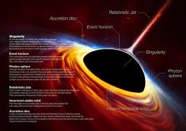
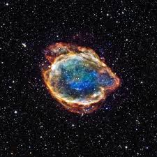
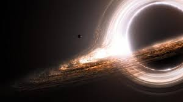

Explore the mysterious and powerful objects in space that warp time and gravity.
Black holes are regions in space where gravity is so strong that nothing, not even light, can escape. They form when massive stars collapse at the end of their life cycle.



Most black holes are formed when massive stars run out of fuel and their cores collapse under gravity. The resulting singularity is surrounded by an event horizon, beyond which nothing can return.
Black holes can be stellar, formed from a single star; supermassive, located at the center of galaxies; or intermediate, which are less common. Each type affects surrounding space differently.